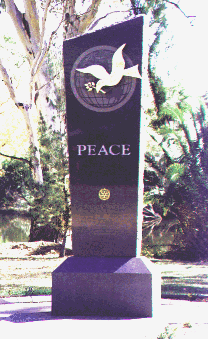

Rotary International Involvement in War and Peace
Rotary and Global Conflict
Conflicts have played a major part in the effects of Rotary upon the world. The dynamics of what happened to Rotary and Rotarians as a result of these conflicts defines much of what Rotary has become.
Peace Initiatives
The history of Peace in the Rotary Movement — the "Fourth Object of Rotary."
Peace Monuments
Rotary Clubs worldwide have built monuments to peace. This is a photo collection of those monuments.
Rotary and the United Nations
Rotary International has had a close relationship with the United Nations since it was hartered in San Francisco in 1945.
The Joseph L. Kagle, Jr. "Peace Journey"
This section of RGHF is the work of one of our RGHF members, long time art museum director, artist, author, professor, and Fulbright Fellow Joseph L. Kagle, Jr.